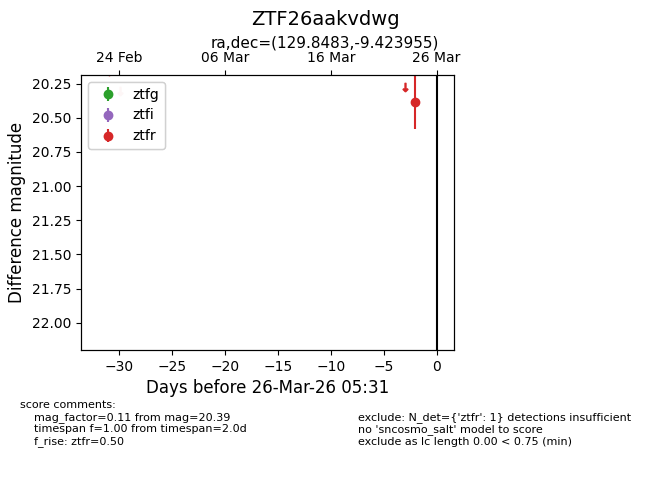
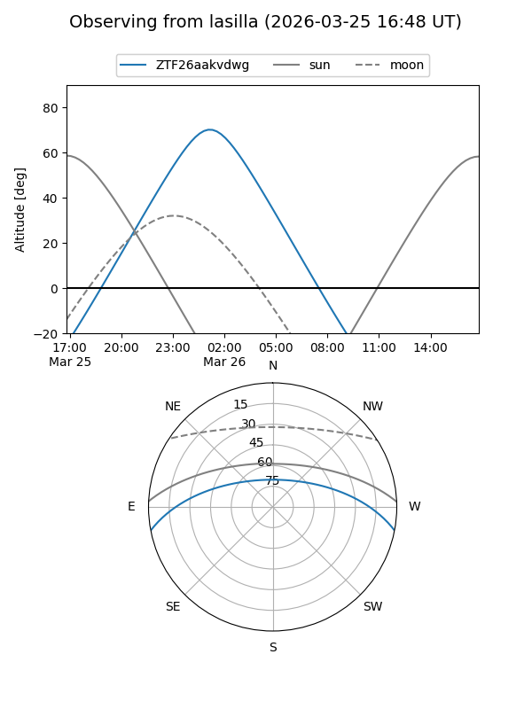
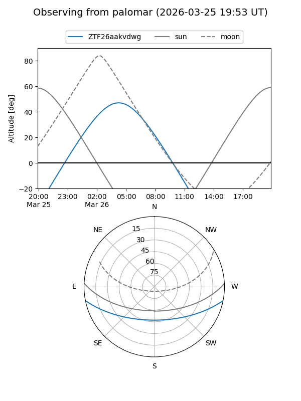

ZTF26aakvdwg
Target ZTF26aakvdwg at 2026-03-26 05:34
Aliases and brokers:
FINK: link
Lasair: link
ALeRCE: link
alt names
ZTF26aakvdwg (ztf,fink_ztf)
Coordinates:
equatorial (ra, dec) = 129.8483,-9.42395
equatorial (HMS+DMS) = 08:39:23.60,-09:25:26.24
galactic (l, b) = (234.6343,+18.89162)
Flags:
Photometry:
last ztfr=20.39
1 ztfr detections
Lightcurve

Visibility


Additional plots